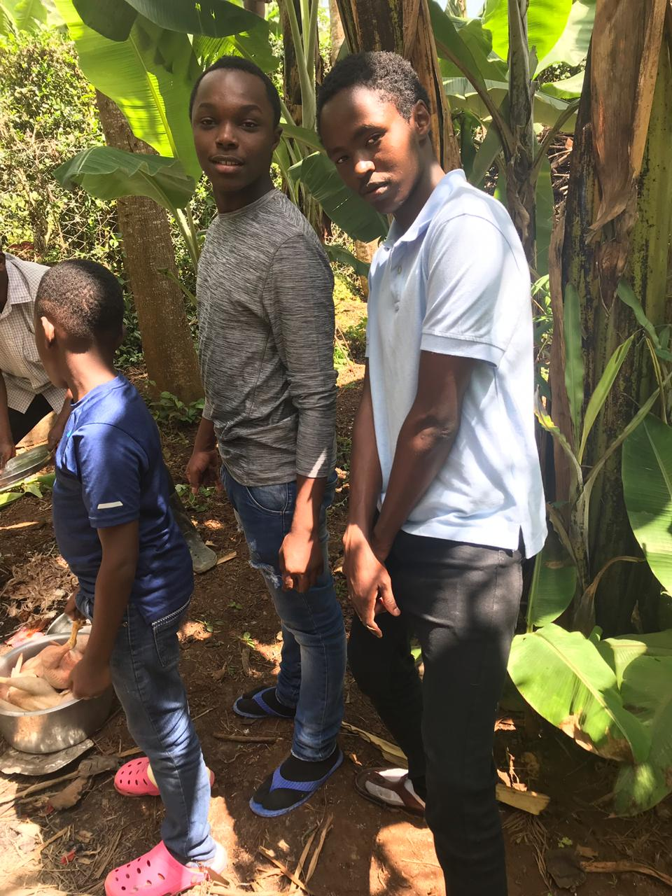
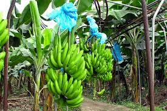

I am a ambitious,self-made, work alcoholic but down to earth person. I like to balance professional & family life. Professional life gives you exposure, confidence & sense of achievement. I believe the fulfillment one gets from one’s work is very important for wellbeing.My motto in life is "We only live once". I also participate in family get-togethers, functions, parties, etc. My favourite pastime is to watch action movies, reading novels & Farming.
Since I joined Moringa school I have created a number of projects. Here is a lst of my projects with links:
This project was my first project and it was just for learning purposes. It does not include alot of content but it is my best project since it was my first. It is written in HTML.
This project was also for learning purposes and it has more details and more desings for example the CSS styling. It is also written in HTML.
Having brought up in Meru County, I went to primary school in Fred's Academy, a famous primary school in the region. I did my KCPE examinations in 2012 advanced to Highschool after attaining 425 marks. In highschool I joined Moi Highschool Kabarak in Nakuru County. I completed highchool in 2016 and attained an A- grade. After this I joined University of Nairobi(UoN), in 2017 where I'm currently pursuing Real Estate.
My hobbies are Swimming, driving, listening to music and mostly farming. Farming is my best pass-time
I learnt how to farm in my family farm in Meru county. Our farm is used for growing of both subsatial crops and cash crops
Here is a list of some of the plants we grow in our family farm;
Here below is a photo of me in the farm and also a photo of some of the bananans in our farm
 